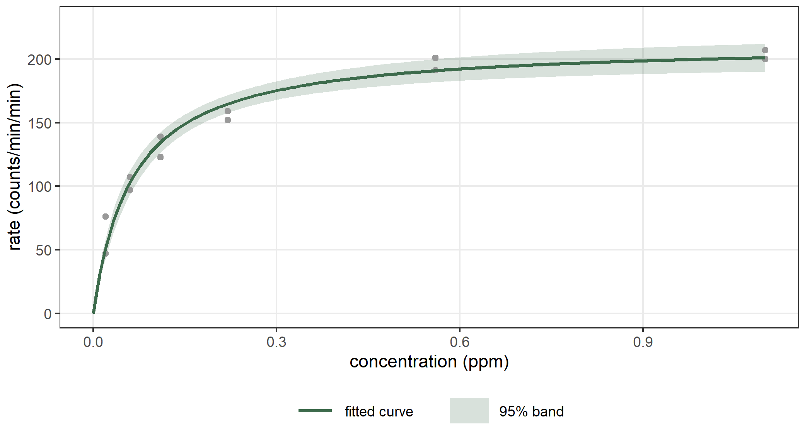
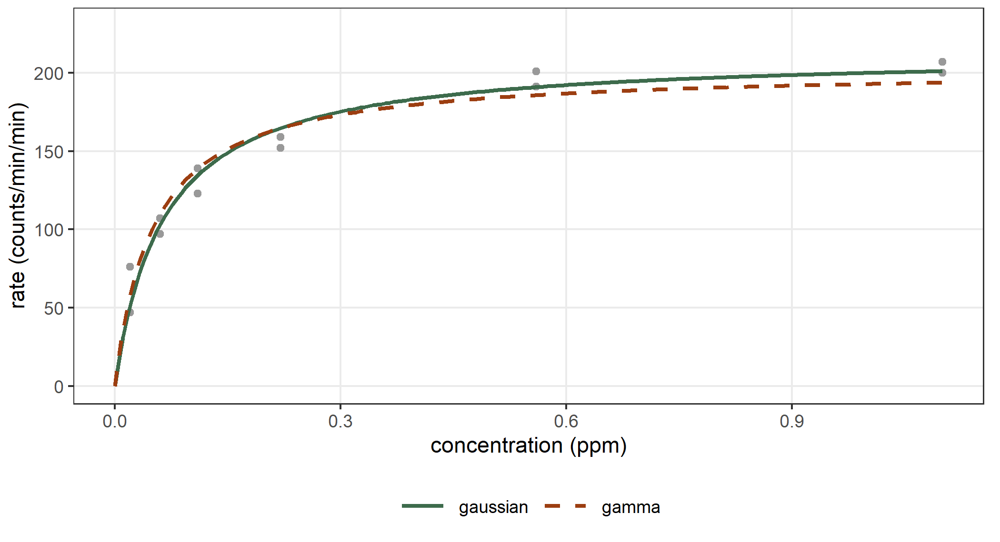
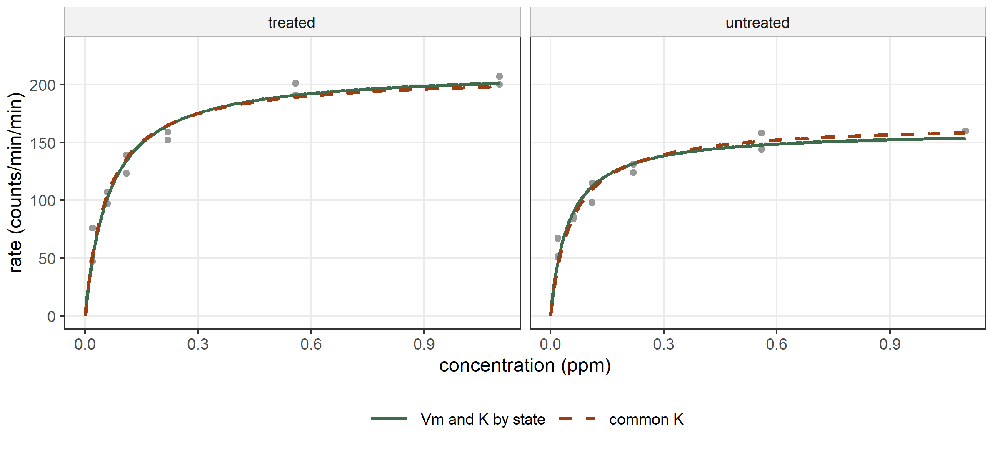
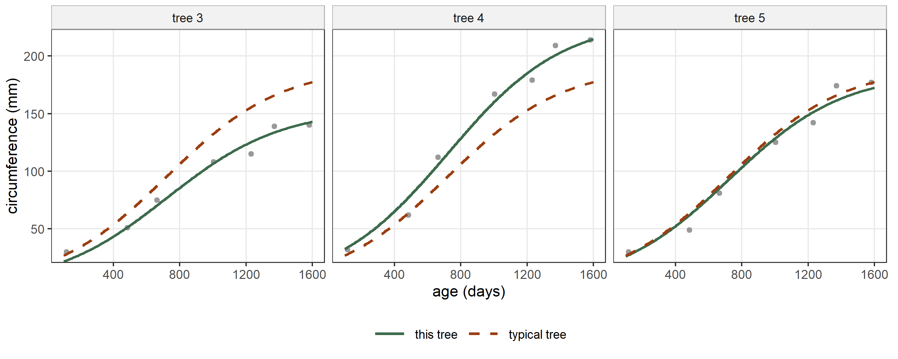
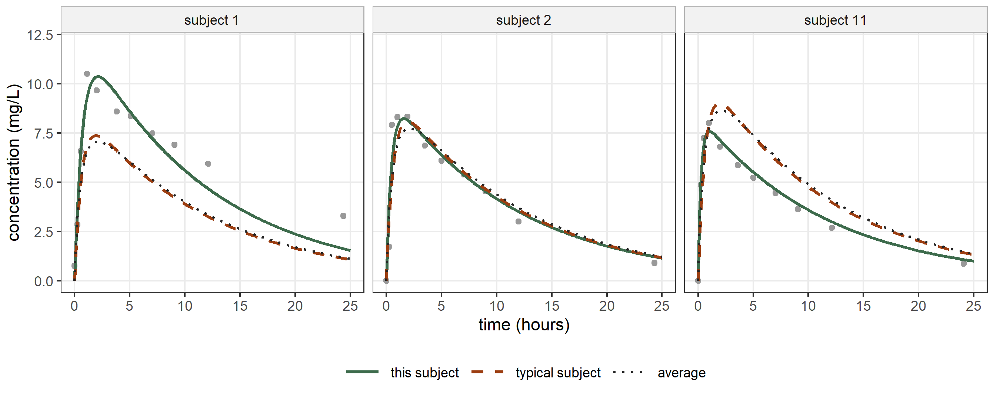
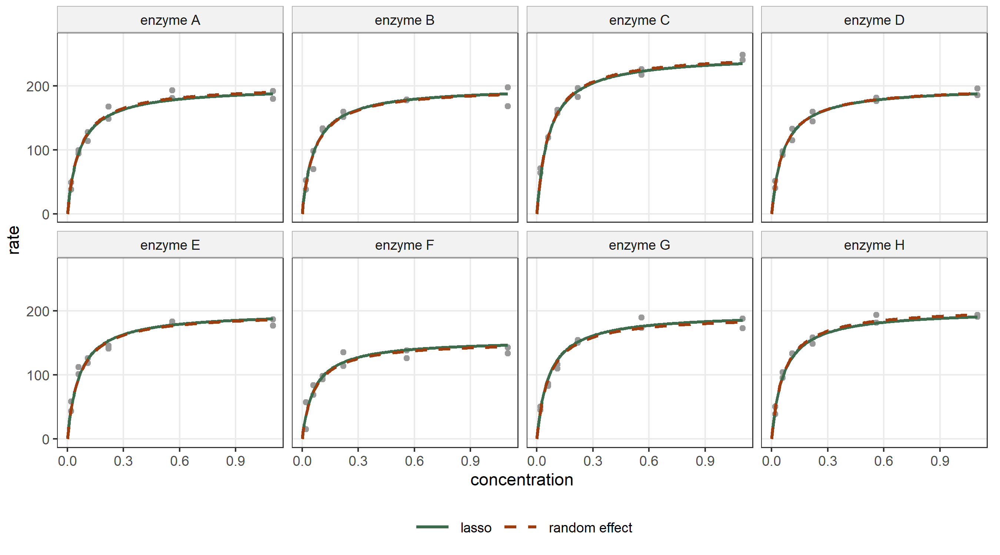
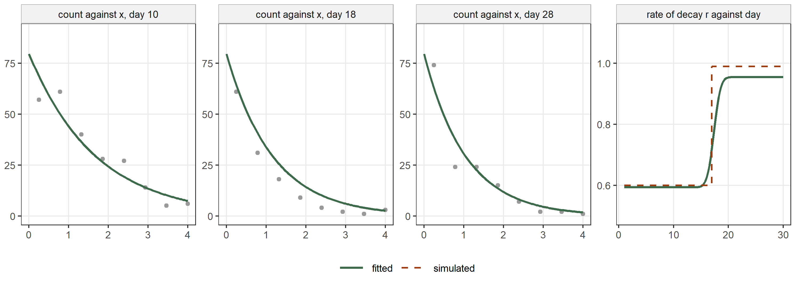
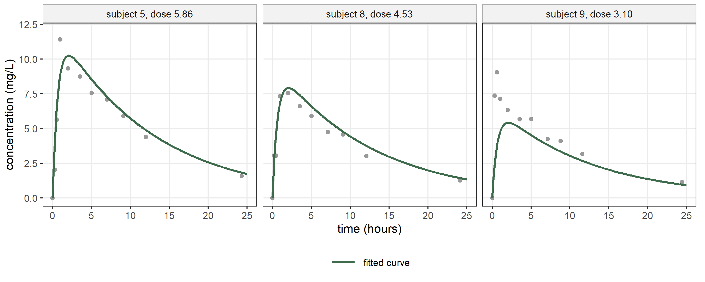

puro <- Puromycin[Puromycin$state == "treated", ]
fit_mm <- statmod(rate ~ 0 + nl(~ Vm * conc / (K + conc)),
distrib = gaussian1_distrib(), data = puro)
summary(fit_mm)
#> A statmod fit
#>
#> Call: statmod(formula = rate ~ 0 + nl(~Vm * conc/(K + conc)), distrib = gaussian1_distrib(),
#> data = puro)
#>
#> Distribution: gaussian1 Observations: 12
#>
#> === mu [identity link]
#>
#> Parametric terms
#> estimate se z p lower upper
#> nl.Vm 212.7 6.947 30.62 < 1e-16 199.1 226.3
#> nl.K 0.06412 0.008281 7.743 9.682e-15 0.04789 0.08035
#>
#> === sigma [log link]
#>
#> Parametric terms
#> estimate se z p lower upper
#> (Intercept) 2.392 0.2236 10.7 < 1e-16 1.954 2.83
#>
#> 95% intervals, bayesian variance
#> conditional log-likelihood -44.729377 effective df 3.00
#> cAIC 95.459 cBIC 96.913
#> fitted in 2.08 s
#> inner max |grad|/se 3.6e-12 min eigen 0.23
#> outer max |grad|/se 8.1e-05 min eigen 112 Nonlinear models
In a nonlinear model a parameter of the distribution, on the scale of its link, is a nonlinear function of the coefficients. The parameter is often the mean, but it can be any of them: a standard deviation that decays with time, or a probability that approaches an asymptote. Many models of this kind come from a mechanism: the rate of an enzymatic reaction, the growth of a tree, the concentration of a drug in the blood. Their coefficients have a meaning of their own, such as a maximum rate or a final size, and the form of the function is fixed by the mechanism. In statmodels7 such a function is a term of the formula, nl(), which takes the formula of the curve as a function of its parameters. Like every other term, nl() can sit in the equation of any parameter of the distribution, and each of its parameters can have a link, covariates, random effects and penalties of its own. The examples of this chapter put nl() in the equation of the mean.
We compare our fits with nls() of the package stats and with nlme() of the package nlme (Bates and Watts 1988; Pinheiro and Bates 2000).
12.1 A nonlinear mean: nl()
The data frame Puromycin gives the initial rate of an enzymatic reaction, in counts per minute per minute, against the concentration of the substrate, in parts per million (Bates and Watts 1988). We use the 12 measurements on cells treated with the antibiotic puromycin. The Michaelis–Menten model describes the rate as \[
y_i \sim \mathrm{N}(\mu_i, \sigma), \qquad
\mu_i = \frac{V_m\, c_i}{K + c_i},
\] where \(c_i\) is the concentration. The parameter \(V_m\) is the largest rate, which the reaction approaches as the concentration grows, and \(K\) is the concentration at which the rate reaches half of \(V_m\).
The first argument of nl() is a one-sided formula. The names in it that are not columns of the data, here Vm and K, are the parameters of the curve, and their coefficients are called nl.Vm and nl.K. The formula of the model starts with 0 because the curve has no intercept. The derivatives of the curve in its parameters come from deriv(), which differentiates the formula symbolically.
We give no starting values, and statmod() computes them from the data. It takes the response on the scale of the predictor, which here is the rate itself because the link of \(\mu\) is the identity. The curve is linear in \(V_m\) when \(K\) is fixed, so for every value of \(K\) the best \(V_m\) is a least squares solution. The parameters in which the curve is not linear, here \(K\), are searched on a grid of about 600 points on the scale of their links. The grid covers a range built from the quantiles, the standard deviation and the range of the response and of the covariates. The twelve best points of the grid are refined by a one-dimensional search, or by the Nelder–Mead method when there are several such parameters, and the best of them is the start. A value written in the argument start is kept as it is, and only the other parameters are searched.
The function nls() fits the same model by least squares:
nls_mm <- nls(rate ~ Vm * conc / (K + conc), data = puro,
start = list(Vm = 200, K = 0.05))
summary(nls_mm)
#>
#> Formula: rate ~ Vm * conc/(K + conc)
#>
#> Parameters:
#> Estimate Std. Error t value Pr(>|t|)
#> Vm 2.127e+02 6.947e+00 30.615 3.24e-11 ***
#> K 6.412e-02 8.281e-03 7.743 1.57e-05 ***
#> ---
#> Signif. codes: 0 '***' 0.001 '**' 0.01 '*' 0.05 '.' 0.1 ' ' 1
#>
#> Residual standard error: 10.93 on 10 degrees of freedom
#>
#> Number of iterations to convergence: 5
#> Achieved convergence tolerance: 8.768e-06We put the estimates, the standard errors and the two estimates of \(\sigma\) side by side:
ci_mm <- confint(fit_mm)
cbind(statmod = ci_mm[c("mu:nl.Vm", "mu:nl.K"), "estimate"],
nls = coef(nls_mm),
se_statmod = ci_mm[c("mu:nl.Vm", "mu:nl.K"), "se"],
se_nls = summary(nls_mm)$coefficients[, "Std. Error"])
#> statmod nls se_statmod se_nls
#> Vm 212.68374314 212.68357997 6.947029129 6.947146256
#> K 0.06412128 0.06412103 0.008280799 0.008280922
c(statmod = exp(coef(fit_mm)$sigma[["(Intercept)"]]), nls = sigma(nls_mm))
#> statmod nls
#> 10.93346 10.93366
c(statmod = logLik(fit_mm), nls = logLik(nls_mm))
#> statmod nls
#> -44.72938 -44.63548The estimates and the standard errors agree with those of nls() to four significant digits. The rate approaches \(\hat V_m = 212.7\) counts per minute per minute, and it is half of that at \(\hat K = 0.0641\) parts per million. The two estimates of \(\sigma\), 10.93346 and 10.93366, differ in the fourth decimal place. Both are the restricted maximum likelihood estimate, which for a gaussian model with \(p = 2\) coefficients is \(\{\sum_i (y_i - \hat\mu_i)^2/(n - p)\}^{1/2}\). nls() computes it in closed form, while statmod() maximizes the restricted likelihood numerically and stops when the criterion no longer changes beyond its tolerance, which leaves the last digits of \(\hat\sigma\) approximate. The two log-likelihoods differ for another reason: ours is evaluated at \(\hat\sigma = 10.933\), and logLik() of nls() is evaluated at the maximum likelihood estimate \(\{\sum_i (y_i - \hat\mu_i)^2/n\}^{1/2}\). Figure 12.1 shows the fitted curve with a 95% confidence band, which we obtain from predict() with se = TRUE.

12.2 Links on the parameters
Both parameters of the Michaelis–Menten curve are positive. The argument links of nl() gives each parameter a link from linkfunctions7, so that the coefficient is the parameter on the scale of the link. With the logarithm, the coefficient can take any real value and the parameter stays positive:
fit_mm_log <- statmod(rate ~ 0 + nl(~ Vm * conc / (K + conc),
links = list(Vm = log_link(),
K = log_link())),
distrib = gaussian1_distrib(), data = puro)
summary(fit_mm_log)
#> A statmod fit
#>
#> Call: statmod(formula = rate ~ 0 + nl(~Vm * conc/(K + conc), links = list(Vm = log_link(),
#> K = log_link())), distrib = gaussian1_distrib(), data = puro)
#>
#> Distribution: gaussian1 Observations: 12
#>
#> === mu [identity link]
#>
#> Parametric terms
#> estimate se z p lower upper
#> nl.Vm 5.36 0.03266 164.1 < 1e-16 5.296 5.424
#> nl.K -2.747 0.1291 -21.27 < 1e-16 -3 -2.494
#>
#> === sigma [log link]
#>
#> Parametric terms
#> estimate se z p lower upper
#> (Intercept) 2.392 0.2236 10.7 < 1e-16 1.954 2.83
#>
#> 95% intervals, bayesian variance
#> conditional log-likelihood -44.729377 effective df 3.00
#> cAIC 95.459 cBIC 96.913
#> fitted in 1.27 s
#> inner max |grad|/se 1.6e-11 min eigen 0.23
#> outer max |grad|/se 8.1e-05 min eigen 1
exp(coef(fit_mm_log)$mu)
#> nl.Vm nl.K
#> 212.68374314 0.06412128
c(identity = logLik(fit_mm), log = logLik(fit_mm_log))
#> identity log
#> -44.72938 -44.72938The fitted curve is the same, so the log-likelihood is the same, and the exponentials of the two coefficients are the estimates of the previous section. What changes is the scale on which the standard errors and the intervals are computed. An interval for \(\log K\), carried back with the exponential, is not symmetric about \(\hat K\) and contains only positive values:
ci_log <- confint(fit_mm_log)
exp(ci_log["mu:nl.K", c("estimate", "lower", "upper")])
#> estimate lower upper
#> mu:nl.K 0.06412128 0.04978238 0.08259024
ci_mm["mu:nl.K", c("estimate", "lower", "upper")]
#> estimate lower upper
#> mu:nl.K 0.06412128 0.04789121 0.08035135A parameter without a link keeps the identity. A link also helps the fit itself, because the optimizer cannot propose a negative value for a parameter that must be positive.
A gamma response
The gaussian model gives every observation the same variance. For a rate it is often more natural to have a constant coefficient of variation, that is a standard deviation proportional to the mean. The family gamma1_distrib() has mean \(\mu\) and variance \(\phi\mu^2\). The curve gives the mean itself, so we set the link of \(\mu\) to the identity. The identity link does not keep \(\mu\) positive by itself, but the curve does: with \(V_m > 0\) and \(K > 0\), the mean is positive at every positive concentration. We keep \(K\) on the logarithmic scale, so that it stays positive whatever its coefficient: \[
y_i \sim \mathrm{Gamma}(\mu_i, \phi), \qquad
\mu_i = \frac{V_m\, c_i}{K + c_i}.
\]
fit_mm_gam <- statmod(rate ~ 0 + nl(~ Vm * conc / (K + conc),
links = list(K = log_link())),
distrib = gamma1_distrib(link_mu = identity_link()),
data = puro, outer_criterion = ml())
summary(fit_mm_gam)
#> A statmod fit
#>
#> Call: statmod(formula = rate ~ 0 + nl(~Vm * conc/(K + conc), links = list(K = log_link())),
#> distrib = gamma1_distrib(link_mu = identity_link()), data = puro,
#> outer_criterion = ml())
#>
#> Distribution: gamma1 Observations: 12
#>
#> === mu [identity link]
#>
#> Parametric terms
#> estimate se z p lower upper
#> nl.Vm 202.5 11.5 17.61 < 1e-16 180 225.1
#> nl.K -2.981 0.1493 -19.97 < 1e-16 -3.274 -2.688
#>
#> === phi [log link]
#>
#> Parametric terms
#> estimate se z p lower upper
#> (Intercept) -4.236 0.4073 -10.4 < 1e-16 -5.034 -3.438
#>
#> 95% intervals, bayesian variance
#> conditional log-likelihood -50.094400 effective df 3.00
#> cAIC 106.189 cBIC 107.644
#> fitted in 280 ms
#> inner max |grad|/se 1.2e-15 min eigen 0.22
#> outer max |grad|/se 2.2e-09 min eigen 1This model is also a generalized linear model. The inverse of the mean is \(1/\mu_i = 1/V_m + (K/V_m)(1/c_i)\), which is linear in \(1/c_i\), so glm() with the gamma family and the inverse link fits it, and its two coefficients give \(V_m\) and \(K\) (McCullagh and Nelder 1989):
glm_mm <- glm(rate ~ I(1 / conc), family = Gamma(link = "inverse"),
data = puro)
summary(glm_mm)
#>
#> Call:
#> glm(formula = rate ~ I(1/conc), family = Gamma(link = "inverse"),
#> data = puro)
#>
#> Coefficients:
#> Estimate Std. Error t value Pr(>|t|)
#> (Intercept) 4.937e-03 3.182e-04 15.51 2.53e-08 ***
#> I(1/conc) 2.505e-04 3.128e-05 8.01 1.16e-05 ***
#> ---
#> Signif. codes: 0 '***' 0.001 '**' 0.01 '*' 0.05 '.' 0.1 ' ' 1
#>
#> (Dispersion parameter for Gamma family taken to be 0.01864325)
#>
#> Null deviance: 1.96037 on 11 degrees of freedom
#> Residual deviance: 0.17399 on 10 degrees of freedom
#> AIC: 106.19
#>
#> Number of Fisher Scoring iterations: 4
b_glm <- coef(glm_mm)
cbind(statmod = c(Vm = coef(fit_mm_gam)$mu[["nl.Vm"]],
K = exp(coef(fit_mm_gam)$mu[["nl.K"]])),
glm = c(Vm = 1 / b_glm[[1]], K = b_glm[[2]] / b_glm[[1]]))
#> statmod glm
#> Vm 202.53989170 202.53989170
#> K 0.05074267 0.05074267
c(statmod = logLik(fit_mm_gam), glm = logLik(glm_mm))
#> statmod glm
#> -50.09440 -50.09442The estimates of \(V_m\) and \(K\) are the same. We fit the model under ml(), so \(\hat\phi = 0.01446\) is the maximum likelihood estimate. logLik() of glm() evaluates the log-likelihood at the deviance divided by \(n\), 0.01450, which is close to it, and the two log-likelihoods agree to four decimals. Figure 12.2 compares the gaussian and the gamma fits.

12.3 Parameters with covariates
The data frame Puromycin also has 11 measurements on untreated cells. Each parameter of the curve can depend on covariates through a formula of its own, written as a further argument of nl() with the parameter on the left-hand side. With Vm ~ state and K ~ state each parameter has an intercept, the value for treated cells, and a difference for untreated cells: \[
\mu_i = \frac{V_{m,i}\, c_i}{K_i + c_i}, \qquad
V_{m,i} = v_0 + v_1 u_i, \qquad K_i = k_0 + k_1 u_i,
\] where \(u_i\) is 1 for untreated cells and 0 otherwise.
fit_st <- statmod(rate ~ 0 + nl(~ Vm * conc / (K + conc), Vm ~ state,
K ~ state),
distrib = gaussian1_distrib(), data = Puromycin,
outer_criterion = ml())
summary(fit_st)
#> A statmod fit
#>
#> Call: statmod(formula = rate ~ 0 + nl(~Vm * conc/(K + conc), Vm ~ state,
#> K ~ state), distrib = gaussian1_distrib(), data = Puromycin,
#> outer_criterion = ml())
#>
#> Distribution: gaussian1 Observations: 23
#>
#> === mu [identity link]
#>
#> Parametric terms
#> estimate se z p lower upper
#> nl.Vm.(Intercept) 212.7 6.006 35.41 < 1e-16 200.9 224.5
#> nl.Vm.stateuntreated -52.4 8.681 -6.037 1.573e-09 -69.42 -35.39
#> nl.K.(Intercept) 0.06412 0.007159 8.957 < 1e-16 0.05009 0.07815
#> nl.K.stateuntreated -0.01641 0.01039 -1.58 0.1141 -0.03677 0.003946
#>
#> === sigma [log link]
#>
#> Parametric terms
#> estimate se z p lower upper
#> (Intercept) 2.246 0.1474 15.24 < 1e-16 1.957 2.535
#>
#> 95% intervals, bayesian variance
#> conditional log-likelihood -84.300058 effective df 5.00
#> cAIC 178.600 cBIC 184.278
#> fitted in 450 ms
#> inner max |grad|/se 1.8e-12 min eigen 0.07
#> outer max |grad|/se 1.1e-06 min eigen 1We fit the model under ml(), because below we compare it with a smaller model by the likelihood ratio, which needs the maximized log-likelihood of both. Under ml() the estimate of \(\sigma\) is the maximum likelihood estimate. The function nls() fits the same model when each parameter is indexed by the factor:
nls_st <- nls(rate ~ Vm[state] * conc / (K[state] + conc), data = Puromycin,
start = list(Vm = c(200, 160), K = c(0.05, 0.05)))
summary(nls_st)
#>
#> Formula: rate ~ Vm[state] * conc/(K[state] + conc)
#>
#> Parameters:
#> Estimate Std. Error t value Pr(>|t|)
#> Vm1 2.127e+02 6.608e+00 32.185 < 2e-16 ***
#> Vm2 1.603e+02 6.896e+00 23.242 2.04e-15 ***
#> K1 6.412e-02 7.877e-03 8.141 1.29e-07 ***
#> K2 4.771e-02 8.281e-03 5.761 1.50e-05 ***
#> ---
#> Signif. codes: 0 '***' 0.001 '**' 0.01 '*' 0.05 '.' 0.1 ' ' 1
#>
#> Residual standard error: 10.4 on 19 degrees of freedom
#>
#> Number of iterations to convergence: 5
#> Achieved convergence tolerance: 7.314e-06
cf_st <- coef(fit_st)$mu
cbind(statmod = c(cf_st[["nl.Vm.(Intercept)"]],
cf_st[["nl.Vm.(Intercept)"]] + cf_st[["nl.Vm.stateuntreated"]],
cf_st[["nl.K.(Intercept)"]],
cf_st[["nl.K.(Intercept)"]] + cf_st[["nl.K.stateuntreated"]]),
nls = coef(nls_st))
#> statmod nls
#> Vm1 212.68374314 212.68357970
#> Vm2 160.28004618 160.28012525
#> K1 0.06412128 0.06412103
#> K2 0.04770818 0.04770831
c(statmod = logLik(fit_st), nls = logLik(nls_st))
#> statmod nls
#> -84.30006 -84.30006The two fits agree, and so do the log-likelihoods, which are both maximized over \(\sigma\). The summary suggests that \(K\) does not depend on the treatment. The smaller model has K without a formula, so \(K\) is the same for the two states:
fit_st0 <- statmod(rate ~ 0 + nl(~ Vm * conc / (K + conc), Vm ~ state),
distrib = gaussian1_distrib(), data = Puromycin,
outer_criterion = ml())
summary(fit_st0)
#> A statmod fit
#>
#> Call: statmod(formula = rate ~ 0 + nl(~Vm * conc/(K + conc), Vm ~ state),
#> distrib = gaussian1_distrib(), data = Puromycin, outer_criterion = ml())
#>
#> Distribution: gaussian1 Observations: 23
#>
#> === mu [identity link]
#>
#> Parametric terms
#> estimate se z p lower upper
#> nl.Vm.(Intercept) 208.6 5.412 38.55 < 1e-16 198 219.2
#> nl.Vm.stateuntreated -42.03 5.849 -7.185 6.701e-13 -53.49 -30.56
#> nl.K 0.05797 0.005511 10.52 < 1e-16 0.04717 0.06877
#>
#> === sigma [log link]
#>
#> Parametric terms
#> estimate se z p lower upper
#> (Intercept) 2.29 0.1474 15.53 < 1e-16 2.001 2.579
#>
#> 95% intervals, bayesian variance
#> conditional log-likelihood -85.295637 effective df 4.00
#> cAIC 178.591 cBIC 183.133
#> fitted in 410 ms
#> inner max |grad|/se 3.6e-13 min eigen 0.18
#> outer max |grad|/se 1.1e-07 min eigen 1
l0 <- logLik(fit_st0)
l1 <- logLik(fit_st)
lr_st <- 2 * (as.numeric(l1) - as.numeric(l0))
lr_st
#> [1] 1.991157
pchisq(lr_st, df = 1, lower.tail = FALSE)
#> [1] 0.1582199The likelihood ratio is 1.991, with a p-value of 0.158, so the data are compatible with a common \(K\). In the smaller model the treatment raises the largest rate from 166.6 to 208.6, and the common \(K\) is 0.0580. Figure 12.3 shows the two models, one panel for each state.

The formula of a parameter takes any term of the package, not only factors: K ~ x for a continuous covariate, K ~ s(x) for a smooth function of it. The formula acts on the scale of the parameter’s link, so with a logarithmic link each covariate multiplies the parameter.
12.4 Random effects on the parameters
In data with groups, a parameter of the curve can vary from group to group. The data frame Orange gives the circumference of the trunk, in millimeters, of five orange trees at seven ages, in days (Draper and Smith 1998; Pinheiro and Bates 2000). The logistic growth curve describes the circumference as \[
\mu_{ij} = \frac{A_i}{1 + \exp\{(x_m - a_{ij})/s\}} ,
\] where \(a_{ij}\) is the age of tree \(i\) at its \(j\)-th measurement. The parameter \(A_i\) is the final circumference of tree \(i\), \(x_m\) is the age at which a tree reaches half of it, and \(s\) sets how fast it grows. We let each tree have its own final circumference, \(A_i = A + b_i\), with \(b_i \sim \mathrm{N}(0, \tau)\). In the formula of Asym we write the random effect with random():
fit_or <- statmod(circumference ~ 0 +
nl(~ Asym / (1 + exp((xmid - age) / scal)),
Asym ~ 1 + random(~ 1 | Tree)),
distrib = gaussian1_distrib(), data = Orange)
summary(fit_or)
#> A statmod fit
#>
#> Call: statmod(formula = circumference ~ 0 + nl(~Asym/(1 + exp((xmid -
#> age)/scal)), Asym ~ 1 + random(~1 | Tree)), distrib = gaussian1_distrib(),
#> data = Orange)
#>
#> Distribution: gaussian1 Observations: 35
#>
#> === mu [identity link]
#>
#> nl(~Asym/(1 + exp((xmid - age)/scal)), Asym ~ 1 + random(~1 | Tree)) [8 coefficients, edf 6.93]
#> estimate se z p lower upper
#> xmid 723.4 34.88 20.74 < 1e-16 655 791.7
#> scal 344.8 26.89 12.82 < 1e-16 292.1 397.5
#>
#> Asym ~ 1 + random(~1 | Tree)
#> fixed effects
#> (Intercept) 191.2 17.26 11.08 < 1e-16 157.4 225
#> random(~1 | Tree) [5 coefficients]
#> sigma [reml] 35.66 12.88 17.56 72.39
#> predicted effects (5 levels of Tree)
#> Min. 1st Qu. Median Mean 3rd Qu. Max.
#> (Intercept) -37.15 -29.52 -5.199 0 31.69 40.18
#>
#> === sigma [log link]
#>
#> Parametric terms
#> estimate se z p lower upper
#> (Intercept) 2.093 0.1333 15.7 < 1e-16 1.832 2.354
#>
#> 95% intervals, bayesian variance
#> conditional log-likelihood -119.489267 effective df 7.93
#> cAIC 254.839 cBIC 267.173
#> fitted in 2.35 s
#> inner max |grad|/se 9.4e-09 min eigen 0.0079
#> outer max |grad|/se 3.5e-05 min eigen 1The summary has a compartment for Asym. It gives the population value \(A\), the (Intercept) of its formula, and the standard deviation \(\tau\) of the random effects, which statmod() estimates by restricted maximum likelihood with the other variance parameters. The function nlme() fits the same model (Lindstrom and Bates 1990; Pinheiro and Bates 2000):
nlme_or <- nlme::nlme(circumference ~ SSlogis(age, Asym, xmid, scal),
data = Orange, fixed = Asym + xmid + scal ~ 1,
random = Asym ~ 1 | Tree,
start = c(Asym = 190, xmid = 700, scal = 350),
method = "REML")
summary(nlme_or)
#> Nonlinear mixed-effects model fit by REML
#> Model: circumference ~ SSlogis(age, Asym, xmid, scal)
#> Data: Orange
#> AIC BIC logLik
#> 249.5147 256.8434 -119.7574
#>
#> Random effects:
#> Formula: Asym ~ 1 | Tree
#> Asym Residual
#> StdDev: 32.92525 8.205809
#>
#> Fixed effects: Asym + xmid + scal ~ 1
#> Value Std.Error DF t-value p-value
#> Asym 191.0507 16.15417 28 11.82671 0
#> xmid 722.5625 35.15256 28 20.55505 0
#> scal 344.1708 27.14828 28 12.67745 0
#> Correlation:
#> Asym xmid
#> xmid 0.375
#> scal 0.354 0.755
#>
#> Standardized Within-Group Residuals:
#> Min Q1 Med Q3 Max
#> -1.8307341 -0.5118496 0.1373242 0.6988084 1.5886406
#>
#> Number of Observations: 35
#> Number of Groups: 5
cbind(statmod = c(coef(fit_or)$mu[c("nl.Asym.(Intercept)", "nl.xmid",
"nl.scal")],
tau = hyper(fit_or)$estimate,
sigma = exp(coef(fit_or)$sigma[["(Intercept)"]])),
nlme = c(nlme::fixef(nlme_or),
as.numeric(nlme::VarCorr(nlme_or)[, "StdDev"])))
#> statmod nlme
#> nl.Asym.(Intercept) 191.203360 191.050662
#> nl.xmid 723.387599 722.562530
#> nl.scal 344.757012 344.170837
#> tau 35.655001 32.925247
#> sigma 8.108685 8.205809
c(statmod = logLik(fit_or, type = "marginal"), nlme = logLik(nlme_or))
#> statmod nlme
#> -119.7280 -119.7574The fixed parameters are close, and the standard deviation of the trees is 35.66 in our fit against 32.93 in that of nlme(). The two packages maximize the same approximation to the restricted likelihood: the restricted likelihood of the linear mixed model obtained by replacing the curve with its first-order expansion in the coefficients and in the random effects (Lindstrom and Bates 1990). The algorithm of nlme() alternates a penalized nonlinear least squares step and a step on the linear mixed model, and it stops at a point where the criterion is -119.757. Our estimates give -119.728, a larger value. The criterion changes little with \(\tau\), so a small difference in its value goes with a visible difference in \(\tau\). With five trees the data carry little information about the variance between trees.
The curve is linear in the random effects \(b_i\), so for given \(x_m\) and \(s\) the likelihood integrated over the \(b_i\) has a closed form, and maximum likelihood involves no approximation. We fit the model by maximum likelihood with both packages:
fit_or_ml <- statmod(circumference ~ 0 +
nl(~ Asym / (1 + exp((xmid - age) / scal)),
Asym ~ 1 + random(~ 1 | Tree)),
distrib = gaussian1_distrib(), data = Orange,
outer_criterion = ml())
summary(fit_or_ml)
#> A statmod fit
#>
#> Call: statmod(formula = circumference ~ 0 + nl(~Asym/(1 + exp((xmid -
#> age)/scal)), Asym ~ 1 + random(~1 | Tree)), distrib = gaussian1_distrib(),
#> data = Orange, outer_criterion = ml())
#>
#> Distribution: gaussian1 Observations: 35
#>
#> === mu [identity link]
#>
#> nl(~Asym/(1 + exp((xmid - age)/scal)), Asym ~ 1 + random(~1 | Tree)) [8 coefficients, edf 6.92]
#> estimate se z p lower upper
#> xmid 722.6 33.59 21.51 < 1e-16 656.8 788.5
#> scal 344.2 25.94 13.27 < 1e-16 293.4 395
#>
#> Asym ~ 1 + random(~1 | Tree)
#> fixed effects
#> (Intercept) 191.1 15.51 12.32 < 1e-16 160.7 221.5
#> random(~1 | Tree) [5 coefficients]
#> sigma [ml] 31.64 10.26 16.76 59.73
#> predicted effects (5 levels of Tree)
#> Min. 1st Qu. Median Mean 3rd Qu. Max.
#> (Intercept) -37.01 -29.41 -5.18 0 31.57 40.03
#>
#> === sigma [log link]
#>
#> Parametric terms
#> estimate se z p lower upper
#> (Intercept) 2.059 0.129 15.96 < 1e-16 1.806 2.312
#>
#> 95% intervals, bayesian variance
#> conditional log-likelihood -119.308114 effective df 7.92
#> cAIC 254.451 cBIC 266.766
#> fitted in 2.31 s
#> inner max |grad|/se 2.3e-08 min eigen 0.0093
#> outer max |grad|/se 0.00011 min eigen 0.99
nlme_or_ml <- nlme::nlme(circumference ~ SSlogis(age, Asym, xmid, scal),
data = Orange, fixed = Asym + xmid + scal ~ 1,
random = Asym ~ 1 | Tree,
start = c(Asym = 190, xmid = 700, scal = 350),
method = "ML")
summary(nlme_or_ml)
#> Nonlinear mixed-effects model fit by maximum likelihood
#> Model: circumference ~ SSlogis(age, Asym, xmid, scal)
#> Data: Orange
#> AIC BIC logLik
#> 273.1691 280.9458 -131.5845
#>
#> Random effects:
#> Formula: Asym ~ 1 | Tree
#> Asym Residual
#> StdDev: 31.48256 7.846254
#>
#> Fixed effects: Asym + xmid + scal ~ 1
#> Value Std.Error DF t-value p-value
#> Asym 191.0507 16.15417 28 11.82671 0
#> xmid 722.5625 35.15256 28 20.55505 0
#> scal 344.1708 27.14828 28 12.67745 0
#> Correlation:
#> Asym xmid
#> xmid 0.375
#> scal 0.354 0.755
#>
#> Standardized Within-Group Residuals:
#> Min Q1 Med Q3 Max
#> -1.9146276 -0.5353051 0.1436171 0.7308313 1.6614401
#>
#> Number of Observations: 35
#> Number of Groups: 5
cbind(statmod = c(coef(fit_or_ml)$mu[c("nl.Asym.(Intercept)", "nl.xmid",
"nl.scal")],
tau = hyper(fit_or_ml)$estimate,
sigma = exp(coef(fit_or_ml)$sigma[["(Intercept)"]])),
nlme = c(nlme::fixef(nlme_or_ml),
as.numeric(nlme::VarCorr(nlme_or_ml)[, "StdDev"])))
#> statmod nlme
#> nl.Asym.(Intercept) 191.059246 191.050662
#> nl.xmid 722.611195 722.562530
#> nl.scal 344.201879 344.170837
#> tau 31.636034 31.482558
#> sigma 7.840027 7.846254
c(statmod = logLik(fit_or_ml, type = "marginal"), nlme = logLik(nlme_or_ml))
#> statmod nlme
#> -131.5844 -131.5845The two maxima differ by less than 0.001, ours being the larger, and the estimates agree to three significant digits.
The argument random of predict() sets the random effects aside. With random = "zero" every tree is given \(b_i = 0\), which is the curve of a typical tree, also for a tree that the fit never saw. Figure 12.4 shows three trees, the one with the smallest final circumference, one in the middle and the one with the largest, each with its own curve and with the curve of the typical tree.

Random effects on two parameters
The data frame Theoph gives the concentration of theophylline in the blood, in milligrams per liter, of twelve subjects at eleven times after an oral dose, in hours (Pinheiro and Bates 2000). The dose, in milligrams per kilogram of body weight, varies between subjects. The one-compartment model with first-order absorption describes the concentration at time \(t\) after a dose \(D\) as \[
\mu = \frac{D\, k_e k_a}{C (k_a - k_e)}
\left(e^{-k_e t} - e^{-k_a t}\right),
\] where \(k_a\) is the rate of absorption, \(k_e\) the rate of elimination and \(C\) the clearance. The three are positive, so we write the curve in their logarithms, lKa, lKe and lCl, as SSfol() of the package stats does. We give the absorption and the clearance a random effect for each subject, with two separate variances:
fit_th <- statmod(conc ~ 0 +
nl(~ Dose * exp(lKe + lKa - lCl) *
(exp(-exp(lKe) * Time) - exp(-exp(lKa) * Time)) /
(exp(lKa) - exp(lKe)),
lKa ~ 1 + random(~ 1 | Subject),
lCl ~ 1 + random(~ 1 | Subject),
start = list(lKe = -2.5, lKa = 0.5, lCl = -3)),
distrib = gaussian1_distrib(), data = Theoph)
summary(fit_th)
#> A statmod fit
#>
#> Call: statmod(formula = conc ~ 0 + nl(~Dose * exp(lKe + lKa - lCl) *
#> (exp(-exp(lKe) * Time) - exp(-exp(lKa) * Time))/(exp(lKa) -
#> exp(lKe)), lKa ~ 1 + random(~1 | Subject), lCl ~ 1 + random(~1 |
#> Subject), start = list(lKe = -2.5, lKa = 0.5, lCl = -3)),
#> distrib = gaussian1_distrib(), data = Theoph)
#>
#> Distribution: gaussian1 Observations: 132
#>
#> === mu [identity link]
#>
#> nl(~Dose * exp(lKe + lKa - lCl) * (exp(-exp(lKe) * Time) - exp(-exp(lKa) * Time))/(exp(lKa) - exp(lKe)), lKa ~ 1 + random(~1 | Subject), lCl ~ 1 + random(~1 | Subject), start = list(lKe = -2.5, lKa = 0.5, lCl = -3)) [27 coefficients, edf 23.64]
#> estimate se z p lower upper
#> lKe -2.455 0.05201 -47.2 < 1e-16 -2.557 -2.353
#>
#> lKa ~ 1 + random(~1 | Subject)
#> fixed effects
#> (Intercept) 0.4679 0.2092 2.237 0.02529 0.05793 0.8779
#> random(~1 | Subject) [12 coefficients]
#> sigma [reml] 0.69 0.1639 0.4332 1.099
#> predicted effects (12 levels of Subject)
#> Min. 1st Qu. Median Mean 3rd Qu. Max.
#> (Intercept) -0.9059 -0.3353 -0.1186 0 0.304 1.426
#>
#> lCl ~ 1 + random(~1 | Subject)
#> fixed effects
#> (Intercept) -3.227 0.06138 -52.58 < 1e-16 -3.347 -3.107
#> random(~1 | Subject) [12 coefficients]
#> sigma [reml] 0.1754 0.03966 0.1126 0.2732
#> predicted effects (12 levels of Subject)
#> Min. 1st Qu. Median Mean 3rd Qu. Max.
#> (Intercept) -0.3559 -0.07551 0.01928 0 0.1189 0.2513
#>
#> === sigma [log link]
#>
#> Parametric terms
#> estimate se z p lower upper
#> (Intercept) -0.3414 0.06826 -5.002 5.687e-07 -0.4752 -0.2076
#>
#> 95% intervals, bayesian variance
#> conditional log-likelihood -130.635426 effective df 24.64
#> cAIC 310.549 cBIC 381.579
#> fitted in 3.28 s
#> inner max |grad|/se 9.9e-06 min eigen 0.016
#> outer max |grad|/se 8e-06 min eigen 0.96Here we give starting values through the argument start, on the scale of the parameters. The random effects enter the curve through the exponential of lKa and lCl, so the curve is not linear in them. We fit the same model with nlme():
nlme_th <- nlme::nlme(conc ~ SSfol(Dose, Time, lKe, lKa, lCl),
data = Theoph, fixed = lKe + lKa + lCl ~ 1,
random = nlme::pdDiag(lKa + lCl ~ 1),
groups = ~ Subject,
start = c(lKe = -2.5, lKa = 0.5, lCl = -3),
method = "REML")
summary(nlme_th)
#> Nonlinear mixed-effects model fit by REML
#> Model: conc ~ SSfol(Dose, Time, lKe, lKa, lCl)
#> Data: Theoph
#> AIC BIC logLik
#> 375.7022 392.8611 -181.8511
#>
#> Random effects:
#> Formula: list(lKa ~ 1, lCl ~ 1)
#> Level: Subject
#> Structure: Diagonal
#> lKa lCl Residual
#> StdDev: 0.6510235 0.1688579 0.7174533
#>
#> Fixed effects: lKe + lKa + lCl ~ 1
#> Value Std.Error DF t-value p-value
#> lKe -2.454703 0.05249034 118 -46.76485 0.0000
#> lKa 0.465729 0.19856510 118 2.34547 0.0207
#> lCl -3.227222 0.06001013 118 -53.77796 0.0000
#> Correlation:
#> lKe lKa
#> lKa -0.193
#> lCl 0.540 -0.078
#>
#> Standardized Within-Group Residuals:
#> Min Q1 Med Q3 Max
#> -3.2472685 -0.4706902 0.0000000 0.3304339 3.8059015
#>
#> Number of Observations: 132
#> Number of Groups: 12
h_th <- hyper(fit_th)
cbind(statmod = c(coef(fit_th)$mu[c("nl.lKe", "nl.lKa.(Intercept)",
"nl.lCl.(Intercept)")],
tau_lKa = h_th$estimate[1], tau_lCl = h_th$estimate[2],
sigma = exp(coef(fit_th)$sigma[["(Intercept)"]])),
nlme = c(nlme::fixef(nlme_th),
as.numeric(nlme::VarCorr(nlme_th)[, "StdDev"])))
#> statmod nlme
#> nl.lKe -2.4545946 -2.4547026
#> nl.lKa.(Intercept) 0.4679340 0.4657295
#> nl.lCl.(Intercept) -3.2269568 -3.2272222
#> tau_lKa 0.6899975 0.6510235
#> tau_lCl 0.1754144 0.1688579
#> sigma 0.7107723 0.7174533
c(statmod = logLik(fit_th, type = "marginal"), nlme = logLik(nlme_th))
#> statmod nlme
#> -181.7989 -181.8511The comparison is the one of the orange trees: the estimates are close, and our restricted criterion, -181.799, is larger than the one at the estimates of nlme(), -181.851.
When the curve is not linear in the random effects, the curve of the typical subject, with the effects at zero, is not the average curve over the subjects. With random = "marginal", predict() averages the curve over the distribution of the random effects, with a Gauss–Hermite rule on a grid of values of the two effects. Figure 12.5 shows three subjects, each with its own curve, the curve of the typical subject and the average curve.

12.5 A lasso on the levels of a parameter
A random effect shrinks every group towards the population value, and every group keeps a departure from it. When most groups share one value of a parameter and only a few differ, a lasso on the levels can set some of the departures exactly to zero. We simulate the initial rates of eight enzymes, each measured twice at six concentrations, with a common \(K = 0.07\) and with \(V_m = 200\) for six of them, 260 for enzyme C and 150 for enzyme F:
set.seed(1)
enzyme <- factor(rep(LETTERS[1:8], each = 12))
conc <- rep(c(0.02, 0.06, 0.11, 0.22, 0.56, 1.10), 16)
vm_true <- c(A = 200, B = 200, C = 260, D = 200, E = 200, F = 150, G = 200,
H = 200)
rate <- vm_true[enzyme] * conc / (0.07 + conc) + rnorm(96, sd = 10)
enz <- data.frame(enzyme = enzyme, conc = conc, rate = rate)In the formula of Vm we write an intercept and a lasso on the levels of enzyme. The term lasso(~ enzyme) has one coefficient for every level, and the intercept is the value of the levels whose departure is zero:
fit_las <- statmod(rate ~ 0 + nl(~ Vm * conc / (K + conc),
Vm ~ 1 + lasso(~ enzyme)),
distrib = gaussian1_distrib(), data = enz)
summary(fit_las)
#> A statmod fit
#>
#> Call: statmod(formula = rate ~ 0 + nl(~Vm * conc/(K + conc), Vm ~ 1 +
#> lasso(~enzyme)), distrib = gaussian1_distrib(), data = enz)
#>
#> Distribution: gaussian1 Observations: 96
#>
#> === mu [identity link]
#>
#> nl(~Vm * conc/(K + conc), Vm ~ 1 + lasso(~enzyme)) [10 coefficients, edf 6.00, 4 selected, 4 at zero]
#> estimate se z p lower upper
#> K 0.06457 0.002439 26.48 <1e-16 0.05979 0.06935
#>
#> Vm ~ 1 + lasso(~enzyme)
#> fixed effects
#> (Intercept) 198.5 2.275 87.26 <1e-16 194.1 203
#> lasso(~enzyme)
#> lambda [bic] 0.2841
#> enzymeC 50 3.928 12.73 <1e-16 42.3 57.7
#> enzymeF -43.53 3.924 -11.09 <1e-16 -51.22 -35.83
#> enzymeG -2.221 3.911 -0.5678 0.5702 -9.887 5.445
#> enzymeH 3.203 3.911 0.8189 0.4128 -4.463 10.87
#>
#> === sigma [log link]
#>
#> Parametric terms
#> estimate se z p lower upper
#> (Intercept) 2.145 0.07217 29.72 < 1e-16 2.003 2.286
#>
#> 95% intervals, bayesian variance
#> conditional log-likelihood -342.102004 effective df 7.00
#> cAIC 698.204 cBIC 716.154
#> fitted in 2.32 s
#> inner max |grad|/se 0.0093 min eigen 0.19
#> zeros max |score|/kink 0.71 (4 coefficients at zero)
#> 3 notes: print(summary(fit), notes = TRUE)The penalty is \(\lambda\sum_g \lvert d_g\rvert\) on the departures \(d_g\), and \(\lambda\) is chosen along a path by the BIC, as in Chapter 10. We fit the same model with a random effect in place of the lasso:
fit_ran <- statmod(rate ~ 0 + nl(~ Vm * conc / (K + conc),
Vm ~ 1 + random(~ 1 | enzyme)),
distrib = gaussian1_distrib(), data = enz)
summary(fit_ran)
#> A statmod fit
#>
#> Call: statmod(formula = rate ~ 0 + nl(~Vm * conc/(K + conc), Vm ~ 1 +
#> random(~1 | enzyme)), distrib = gaussian1_distrib(), data = enz)
#>
#> Distribution: gaussian1 Observations: 96
#>
#> === mu [identity link]
#>
#> nl(~Vm * conc/(K + conc), Vm ~ 1 + random(~1 | enzyme)) [10 coefficients, edf 8.88]
#> estimate se z p lower upper
#> K 0.06495 0.002505 25.93 < 1e-16 0.06004 0.06986
#>
#> Vm ~ 1 + random(~1 | enzyme)
#> fixed effects
#> (Intercept) 199.7 9.723 20.54 < 1e-16 180.6 218.7
#> random(~1 | enzyme) [8 coefficients]
#> sigma [reml] 26.93 7.329 15.8 45.91
#> predicted effects (8 levels of enzyme)
#> Min. 1st Qu. Median Mean 3rd Qu. Max.
#> (Intercept) -47.15 -3.503 -1.37 0 2.563 51.7
#>
#> === sigma [log link]
#>
#> Parametric terms
#> estimate se z p lower upper
#> (Intercept) 2.168 0.0758 28.6 < 1e-16 2.019 2.316
#>
#> 95% intervals, bayesian variance
#> conditional log-likelihood -339.883172 effective df 9.88
#> cAIC 699.522 cBIC 724.852
#> fitted in 1.91 s
#> inner max |grad|/se 2.9e-05 min eigen 0.0087
#> outer max |grad|/se 0.00056 min eigen 1
d_las <- coef(fit_las)$mu[paste0("nl.Vm.lasso.enzyme", LETTERS[1:8])]
d_ran <- coef(fit_ran)$mu[paste0("nl.Vm.random.", LETTERS[1:8])]
round(cbind(true = vm_true - 200, lasso = d_las, random = d_ran), 2)
#> true lasso random
#> A 0 0.00 1.53
#> B 0 0.00 -2.27
#> C 60 50.00 51.70
#> D 0 0.00 -0.47
#> E 0 0.00 -2.50
#> F -50 -43.53 -47.15
#> G 0 -2.22 -6.51
#> H 0 3.20 5.67The lasso sets exactly to zero the departures of 4 enzymes, A, B, D, E, and keeps those of C, F, G, H. The departures of C and F are close to the simulated ones, and those of the other enzymes that it keeps are small. The random effect gives every enzyme a departure. Figure 12.6 shows the eight enzymes, one panel each, with the curves of the two models.

12.6 A break-point inside a parameter
The formula of a parameter can also contain a break-point term from Chapter 11, so that the parameter changes at an estimated value of a covariate. We simulate a sequence of 30 daily experiments. In each one a count decays over eight times \(x\), and from day 18 the decay is faster: \[ y \sim \mathrm{Poisson}(\mu), \qquad \mu = a\, e^{-r x}, \qquad \log r = r_0 + \delta\, \mathbb{1}(\text{day} > \psi). \]
set.seed(2)
decay <- data.frame(day = rep(1:30, each = 8),
x = rep(seq(0.25, 4, length.out = 8), 30))
r_true <- exp(log(0.6) + 0.5 * (decay$day > 17))
decay$y <- rpois(240, 80 * exp(-r_true * decay$x))Inside nl() the break-point term must be smoothed, because its block has to be a Jacobian like the rest of the term. We take the smoothed step of smooth_probit() (Section 11.6). The counts are Poisson with the identity link, since the curve gives the mean itself, and both \(a\) and \(r\) are on the logarithmic scale:
fit_dec <- statmod(y ~ 0 + nl(~ a * exp(-r * x),
r ~ jump(day, smoothed = smooth_probit()),
links = list(a = log_link(), r = log_link()),
start = list(a = 50, r = 1)),
distrib = poisson_distrib(link_mu = identity_link()),
data = decay)
summary(fit_dec)
#> A statmod fit
#>
#> Call: statmod(formula = y ~ 0 + nl(~a * exp(-r * x), r ~ jump(day,
#> smoothed = smooth_probit()), links = list(a = log_link(),
#> r = log_link()), start = list(a = 50, r = 1)), distrib = poisson_distrib(link_mu = identity_link()),
#> data = decay)
#>
#> Distribution: poisson Observations: 240
#>
#> === mu [identity link]
#>
#> Parametric terms
#> estimate se z p lower upper
#> nl.a 4.377 0.02032 215.4 < 1e-16 4.337 4.416
#> nl.r.(Intercept) -0.5217 0.02306 -22.62 < 1e-16 -0.5669 -0.4765
#> nl.r.jump.delta1 0.4749 0.02512 18.9 < 1e-16 0.4256 0.5241
#> nl.r.jump.psi1 17.23 0.271 63.57 < 1e-16 16.69 17.76
#>
#> 95% intervals, bayesian variance
#> conditional log-likelihood -690.434373 effective df 4.00
#> cAIC 1388.869 cBIC 1402.791
#> fitted in 210 ms
#> inner max |grad|/se 1.9e-05 min eigen 0.17
statmod_certificate(fit_dec)$state
#> [1] "converged"The position of the change is \(\hat\psi = 17.23\), between day 17 and day 18, and it has a standard error because the step is smooth. The logarithm of the rate rises by 0.475, against 0.5 in the simulation. We compare the model with the one without a change:
fit_dec0 <- statmod(y ~ 0 + nl(~ a * exp(-r * x),
links = list(a = log_link(), r = log_link()),
start = list(a = 50, r = 1)),
distrib = poisson_distrib(link_mu = identity_link()),
data = decay)
summary(fit_dec0)
#> A statmod fit
#>
#> Call: statmod(formula = y ~ 0 + nl(~a * exp(-r * x), links = list(a = log_link(),
#> r = log_link()), start = list(a = 50, r = 1)), distrib = poisson_distrib(link_mu = identity_link()),
#> data = decay)
#>
#> Distribution: poisson Observations: 240
#>
#> === mu [identity link]
#>
#> Parametric terms
#> estimate se z p lower upper
#> nl.a 4.355 0.02028 214.7 < 1e-16 4.315 4.395
#> nl.r -0.3492 0.01844 -18.94 < 1e-16 -0.3854 -0.3131
#>
#> 95% intervals, bayesian variance
#> conditional log-likelihood -871.424088 effective df 2.00
#> cAIC 1746.848 cBIC 1753.809
#> fitted in 40 ms
#> inner max |grad|/se 9.2e-14 min eigen 0.24
c(no_change = AIC(fit_dec0), change = AIC(fit_dec))
#> no_change change
#> 1746.848 1388.869The AIC prefers the model with the change. The likelihood ratio between the two models has no \(\chi^2\) reference, because the position of the change is not defined when there is no change (Davies 1987). Figure 12.7 shows three days, one before the change, the first day after it and one later, and the rate of decay estimated for each day. We compute the rate from two predictions, because \(\mu(1)/\mu(0) = e^{-r}\).

The sharp term jump(day) is rejected inside nl(), with a message that names the argument smoothed. Its block is a working linearization rather than a Jacobian, and it cannot sit inside the Jacobian of another term.
12.7 A function written in R
When the curve cannot be written as a formula, the first argument of nl() can be an R function of two arguments, the covariates x and a list theta of the parameters, vectorized in both. The argument params names the parameters, and the argument x gives the expression, evaluated in the data, that is passed to the function. A function can be anything that R computes, for example a model function of another package. The function SSfol() of stats computes the one-compartment curve of the previous section, and we use it as it is:
fol <- function(x, theta) {
as.numeric(SSfol(x[, "Dose"], x[, "Time"], theta$lKe, theta$lKa,
theta$lCl))
}
fit_fn <- statmod(conc ~ 0 + nl(fol, params = c("lKe", "lKa", "lCl"),
x = cbind(Dose = Dose, Time = Time),
start = list(lKe = -2.5, lKa = 0.5,
lCl = -3)),
distrib = gaussian1_distrib(), data = Theoph)
summary(fit_fn)
#> A statmod fit
#>
#> Call: statmod(formula = conc ~ 0 + nl(fol, params = c("lKe", "lKa",
#> "lCl"), x = cbind(Dose = Dose, Time = Time), start = list(lKe = -2.5,
#> lKa = 0.5, lCl = -3)), distrib = gaussian1_distrib(), data = Theoph)
#>
#> Distribution: gaussian1 Observations: 132
#>
#> === mu [identity link]
#>
#> Parametric terms
#> estimate se z p lower upper
#> nl.lKe -2.524 0.1103 -22.88 < 1e-16 -2.741 -2.308
#> nl.lKa 0.3992 0.1175 3.397 0.0006823 0.1689 0.6296
#> nl.lCl -3.248 0.07439 -43.66 < 1e-16 -3.394 -3.102
#>
#> === sigma [log link]
#>
#> Parametric terms
#> estimate se z p lower upper
#> (Intercept) 0.3775 0.06226 6.063 1.335e-09 0.2555 0.4995
#>
#> 95% intervals, bayesian variance
#> conditional log-likelihood -235.626820 effective df 4.00
#> cAIC 479.254 cBIC 490.785
#> fitted in 1 s
#> inner max |grad|/se 1.6e-12 min eigen 0.041
#> outer max |grad|/se 4.7e-11 min eigen 1This model has no random effects: all subjects share the three parameters. Inside a function the place where each parameter enters is not visible to statmod(), so a parameter of a function cannot have a formula of its own. The same model written as a formula, and the fit of nls(), give the same estimates:
fit_fm <- statmod(conc ~ 0 +
nl(~ Dose * exp(lKe + lKa - lCl) *
(exp(-exp(lKe) * Time) - exp(-exp(lKa) * Time)) /
(exp(lKa) - exp(lKe)),
start = list(lKe = -2.5, lKa = 0.5, lCl = -3)),
distrib = gaussian1_distrib(), data = Theoph)
nls_fn <- nls(conc ~ SSfol(Dose, Time, lKe, lKa, lCl), data = Theoph)
cbind(fn = coef(fit_fn)$mu, formula = coef(fit_fm)$mu, nls = coef(nls_fn))
#> fn formula nls
#> nl.lKe -2.5242387 -2.5242387 -2.5242395
#> nl.lKa 0.3992266 0.3992266 0.3992278
#> nl.lCl -3.2482626 -3.2482626 -3.2482630The derivatives of a function in its parameters are computed by finite differences. Where they are known, the argument gradient supplies the first ones, as a function of theta and of data, the variables of the data, that returns a named list with one vector per parameter. SSfol() returns its gradient as an attribute when its parameters are given as names of variables, so we copy them into three variables and read the gradient from there:
fol_grad <- function(theta, data) {
lKe <- theta$lKe
lKa <- theta$lKa
lCl <- theta$lCl
g <- attr(SSfol(data$Dose, data$Time, lKe, lKa, lCl), "gradient")
list(lKe = g[, "lKe"], lKa = g[, "lKa"], lCl = g[, "lCl"])
}
fit_fg <- statmod(conc ~ 0 + nl(fol, params = c("lKe", "lKa", "lCl"),
x = cbind(Dose = Dose, Time = Time),
gradient = fol_grad,
start = list(lKe = -2.5, lKa = 0.5,
lCl = -3)),
distrib = gaussian1_distrib(), data = Theoph)
coef(fit_fg)$mu
#> nl.lKe nl.lKa nl.lCl
#> -2.5242387 0.3992266 -3.2482626The estimates are the same. With the exact gradient the design block of the term is exact, and the higher derivatives are finite differences of the gradient rather than of the function itself. Figure 12.8 shows the fitted curve for three subjects with different doses.
